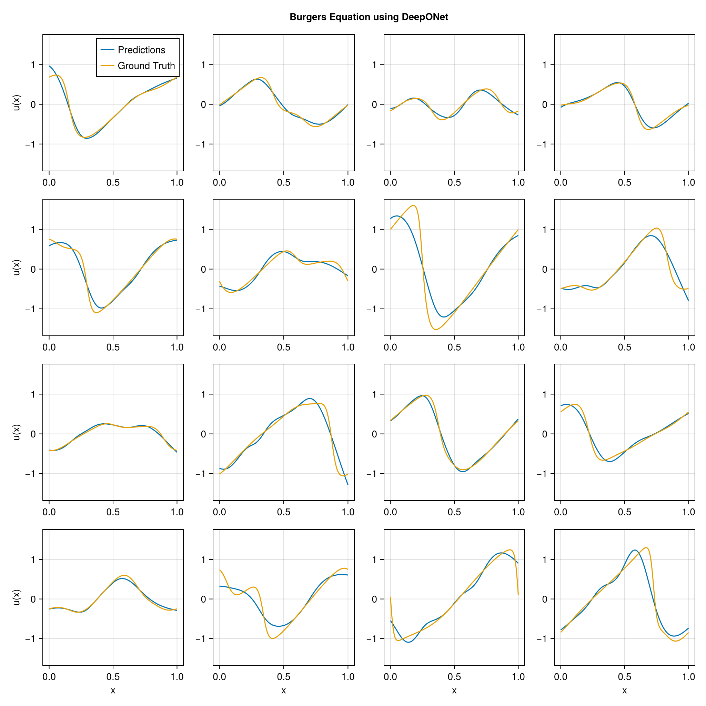

using DataDeps, MAT, MLUtils
using PythonCall, CondaPkg # For `gdown`
using Printf
const gdown = pyimport("gdown")
register(
DataDep(
"Burgers",
"""
Burgers' equation dataset from
[fourier_neural_operator](https://github.com/zongyi-li/fourier_neural_operator)
mapping between initial conditions to the solutions at the last point of time \
evolution in some function space.
u(x,0) -> u(x, time_end):
* `a`: initial conditions u(x,0)
* `u`: solutions u(x,t_end)
""",
"https://drive.google.com/uc?id=16a8od4vidbiNR3WtaBPCSZ0T3moxjhYe",
"9cbbe5070556c777b1ba3bacd49da5c36ea8ed138ba51b6ee76a24b971066ecd";
fetch_method=(url, local_dir) -> begin
pyconvert(String, gdown.download(url, joinpath(local_dir, "Burgers_R10.zip")))
end,
post_fetch_method=unpack
)
)
filepath = joinpath(datadep"Burgers", "burgers_data_R10.mat")
const N = 2048
const Δsamples = 2^3
const grid_size = div(2^13, Δsamples)
const T = Float32
file = matopen(filepath)
x_data = reshape(T.(collect(read(file, "a")[1:N, 1:Δsamples:end])), N, :, 1)
y_data = reshape(T.(collect(read(file, "u")[1:N, 1:Δsamples:end])), N, :, 1)
close(file)
x_data = permutedims(x_data, (2, 1, 3))
grid = reshape(T.(collect(range(0, 1; length=grid_size)')), :, grid_size, 1)
1×1024×1 Array{Float32, 3}:
[:, :, 1] =
0.0 0.000977517 0.00195503 … 0.997067 0.998045 0.999022 1.0
using Lux, NeuralOperators, Optimisers, Zygote, Random
using LuxCUDA
const cdev = cpu_device()
const gdev = gpu_device()
deeponet = DeepONet(;
branch=(size(x_data, 1), ntuple(Returns(32), 5)...),
trunk=(size(grid, 1), ntuple(Returns(32), 5)...),
branch_activation=tanh,
trunk_activation=tanh
)
ps, st = Lux.setup(Random.default_rng(), deeponet) |> gdev;
((branch = (layer_1 = (weight = Float32[0.08027247 -0.08221909 … 0.08814419 0.08482582; 0.024074819 0.040437493 … -0.008728451 0.05484262; … ; 0.075028 0.0034574817 … 0.05564164 0.031418417; -0.0802146 -0.07419061 … -0.027070526 0.035314694], bias = Float32[0.019050784, -0.008546315, -0.021030221, -0.007939536, -0.024249949, -0.02570682, -0.010686774, 0.02191938, -0.0018790439, 0.015077796 … -0.028359212, 0.017612133, 0.0029960051, 0.005039919, 0.029957727, 0.025627151, 0.011159711, -0.014501888, 0.025978241, 0.021147892]), layer_2 = (weight = Float32[-0.41905993 -0.27719945 … -0.4415462 -0.48032838; 0.46762285 0.0259159 … -0.21609883 -0.065532595; … ; 0.094743185 -0.045105357 … 0.22418265 0.4110076; 0.034478795 -0.13090137 … -0.18476756 -0.113689125], bias = Float32[0.10673615, -0.0625949, 0.16430016, -0.0070553613, -0.057198245, 0.11505504, 0.033703107, -0.12406808, -0.008501546, 0.12209451 … 0.13456461, -0.025764875, 0.02293545, 0.02374465, -0.13627614, 0.035669595, 0.046874627, -0.09466233, 0.035254385, -0.056396086]), layer_3 = (weight = Float32[0.16549963 -0.4514075 … -0.019673022 -0.26170722; -0.084966235 -0.42865074 … 0.08133385 0.46236888; … ; 0.34944126 0.11406976 … -0.13155082 -0.4420639; -0.24582194 0.30115077 … -0.36454055 -0.509506], bias = Float32[-0.12334476, 0.1149538, 0.11216612, -0.16823252, -0.084361, -0.10685263, 0.0138099, 0.08463898, -0.0680357, -0.058748703 … 0.13931835, -0.049352486, -0.034892954, -0.038395528, -0.038859922, 0.05570863, 0.060431182, -0.028946519, -0.039620694, -0.15306655]), layer_4 = (weight = Float32[0.09172681 0.19930336 … -0.043529335 0.093921386; 0.4275256 0.16231962 … -0.070071094 0.32226622; … ; -0.29270637 -0.3324807 … -0.17955442 0.22091326; -0.4371805 0.43941855 … -0.45653436 0.2106067], bias = Float32[0.058503408, -0.14965749, 0.0010238101, 0.09780949, -0.007692917, 0.07638364, 0.1575259, -0.0903479, 0.08907578, -0.07898692 … 0.14339224, 0.07437863, -0.11878223, -0.09643726, -0.06926738, -0.0067063854, -0.1500395, -0.16286826, 0.047085762, -0.060097486]), layer_5 = (weight = Float32[0.25457433 -0.11237151 … 0.22083431 -0.021396806; -0.014399675 -0.0709368 … 0.14468828 0.017919976; … ; -0.25226635 -0.053530928 … -0.23690125 0.15695572; -0.22991905 -0.1192091 … -0.016386675 0.29321155], bias = Float32[-0.034036234, -0.102745906, 0.119925104, 0.057383273, -0.05525865, 0.1048213, 0.110988945, -0.06879289, -0.1317686, -0.12844701 … 0.14576024, 0.110374756, 0.008446798, 0.019432247, -0.13074996, -0.09061703, 0.090335764, -0.024119377, 0.020387147, -0.10750839])), trunk = (layer_1 = (weight = Float32[-2.398251; 0.8364915; … ; 1.4569236; -1.2735993;;], bias = Float32[0.9119785, 0.4369204, 0.0075155497, -0.57248044, 0.33293176, -0.8927474, 0.28061223, 0.3468187, -0.83230877, -0.33033812 … -0.60724235, -0.15501475, 0.011804938, 0.23291194, 0.20182192, 0.82754004, 0.55402946, -0.08184683, -0.43486905, 0.9878558]), layer_2 = (weight = Float32[0.016420059 -0.27567738 … 0.37803152 -0.326715; -0.39609057 0.056888547 … 0.41016203 -0.4456783; … ; 0.46555611 -0.350623 … -0.051162448 0.22826776; -0.21863662 0.12936993 … 0.27684885 -0.4831948], bias = Float32[0.14536263, -0.0697328, 0.038925335, 0.12459089, 0.09843129, -0.1117039, 0.030679196, -0.109196626, 0.029095488, -0.08374079 … 0.16132806, -0.14157367, -0.07889791, -0.11960062, 0.09386531, -0.12936446, -0.13269615, 0.17472509, 0.17603543, -0.020926585]), layer_3 = (weight = Float32[-0.45612374 -0.48096853 … 0.42978722 -0.49232158; 0.35081282 -0.16211186 … -0.34354258 -0.2387982; … ; -0.497554 0.5033822 … 0.40981066 -0.32553446; 0.28121015 0.5041752 … -0.14261228 0.07982432], bias = Float32[-0.04181886, -0.0019502821, 0.04078504, 0.020970544, -0.15037686, -0.039897345, -0.14328259, -0.11361414, -0.14108342, -0.14549577 … -0.016455416, -0.050534282, 0.065221235, 0.036877334, -0.13169509, 0.008205823, 0.026493214, -0.16985388, 0.114865504, -0.093694195]), layer_4 = (weight = Float32[-0.48635566 0.024988247 … 0.4400343 0.23754503; 0.049396444 0.078720376 … 0.45750862 0.11455595; … ; 0.43607688 -0.07948147 … -0.018458901 -0.50818336; 0.23420349 -0.18920843 … 0.13391031 -0.50142294], bias = Float32[-0.06958234, -0.16622007, 0.046559457, 0.12697259, -0.059072055, 0.056795534, -0.14846358, 0.12658726, 0.074840665, 0.13628909 … -0.13198645, -0.15032558, 0.14764829, 0.16046943, -0.04055298, -0.051678568, -0.1612956, 0.07494369, 0.095608085, 0.019530933]), layer_5 = (weight = Float32[0.042125843 -0.084532335 … -0.1258756 0.13175824; -0.18390973 0.28511387 … -0.18126535 -0.28979716; … ; 0.16155073 0.1233583 … 0.0796439 0.08177339; -0.2598056 -0.25671065 … 0.19762242 -0.2961157], bias = Float32[0.0147726815, 0.11322433, -0.09979516, -0.086058386, -0.11883557, -0.09016579, -0.108713895, 0.052065182, 0.15015325, -0.08418489 … -0.010622439, 0.11472806, 0.17590585, 0.105284765, -0.047497686, -0.05435262, 0.15176176, -0.15967682, 0.032585435, -0.020942157])), additional = NamedTuple()), (branch = (layer_1 = NamedTuple(), layer_2 = NamedTuple(), layer_3 = NamedTuple(), layer_4 = NamedTuple(), layer_5 = NamedTuple()), trunk = (layer_1 = NamedTuple(), layer_2 = NamedTuple(), layer_3 = NamedTuple(), layer_4 = NamedTuple(), layer_5 = NamedTuple()), additional = NamedTuple()))
x_data_dev = x_data |> gdev
y_data_dev = y_data |> gdev
grid_dev = grid |> gdev
function loss_function(model, ps, st, ((v, y), u))
û, stₙ = model((v, y), ps, st)
return MAELoss()(û, u), stₙ, (;)
end
function train_model!(model, ps, st, data; epochs=5000)
train_state = Training.TrainState(model, ps, st, Adam(0.0001f0))
for epoch in 1:epochs
_, loss, _, train_state = Training.single_train_step!(
AutoZygote(), loss_function, data, train_state)
if epoch % 25 == 1 || epoch == epochs
@printf("Epoch %d: loss = %.6e\n", epoch, loss)
end
end
return train_state.parameters, train_state.states
end
ps_trained, st_trained = train_model!(
deeponet, ps, st, ((x_data_dev, grid_dev), y_data_dev))
((branch = (layer_1 = (weight = Float32[0.06900685 -0.09337794 … 0.076712474 0.07346935; 0.03039188 0.047279738 … -0.0037667695 0.060402766; … ; 0.07338642 0.0014638286 … 0.054724418 0.030136464; -0.08462995 -0.079447664 … -0.029686455 0.03177457], bias = Float32[-0.0830989, -0.10978612, -0.09825059, -0.0459441, 0.016250025, -0.069625, 0.032216746, 0.094569884, -0.119227976, -0.04521498 … 0.080541015, 0.011488152, -0.091374114, -0.06895846, 0.054693263, 0.04920672, 0.109631926, -0.05027296, 0.08829758, 0.06832546]), layer_2 = (weight = Float32[-0.4076147 -0.27974835 … -0.42079824 -0.45091775; 0.47387215 0.011882708 … -0.20556365 -0.022982411; … ; 0.05050571 -0.051418323 … 0.22561322 0.3778674; 0.060686056 -0.13611878 … -0.16984233 -0.11266909], bias = Float32[0.046135068, -0.1766243, 0.2894, 0.046002325, -0.03812698, 0.15535158, 0.006978945, -0.18556371, -0.12404313, 0.1195419 … 0.28284657, -0.023959324, 0.061287906, 0.20714782, -0.14826311, 0.12094926, 0.11135712, -0.11904778, 0.19509934, -0.050217867]), layer_3 = (weight = Float32[0.16113712 -0.4816316 … -0.012635913 -0.27460623; -0.11400537 -0.43089113 … 0.11691152 0.42001665; … ; 0.35677657 0.1397414 … -0.116754204 -0.40391853; -0.20470925 0.3598114 … -0.35511127 -0.46545038], bias = Float32[-0.07596146, 0.26263928, 0.28070378, -0.11170842, -0.0023932285, -0.14755917, -0.062228605, 0.06987511, -0.09950201, -0.2500124 … 0.25068215, 0.07745013, -0.04373284, -0.11594834, -0.068611205, 0.05640596, -0.070027, -0.110177204, -0.09422401, -0.3002987]), layer_4 = (weight = Float32[0.034342222 0.12050689 … -0.08944117 0.032694794; 0.41485214 0.16920309 … -0.0619597 0.32555097; … ; -0.3293164 -0.29185748 … -0.16451767 0.22443382; -0.36217636 0.5117595 … -0.43745878 0.20696373], bias = Float32[0.10469673, -0.18081847, 0.06411591, 0.089346886, -0.04659718, 0.02017575, 0.10277537, -0.006336351, 0.14503254, -0.09847114 … 0.16711916, 0.10008669, -0.048366543, -0.10598265, -0.108787075, -0.19990441, -0.21586569, -0.12764142, 0.024607975, -0.062392935]), layer_5 = (weight = Float32[0.25885895 -0.12312953 … 0.23441012 -0.033855278; -0.03938827 -0.08426773 … 0.12354603 0.006440731; … ; -0.21233363 -0.07918883 … -0.24863905 0.14073311; -0.2565006 -0.10684169 … -0.021430131 0.31691262], bias = Float32[-0.04265997, -0.099395, 0.12057744, 0.06692461, -0.08290493, 0.10847816, 0.08929145, -0.034951758, -0.08006591, -0.1399416 … 0.11895604, 0.07045991, -0.006018067, -0.014362211, -0.17250092, -0.048368983, 0.07542786, -0.028742772, 0.10282628, -0.107239544])), trunk = (layer_1 = (weight = Float32[-2.3269498; 0.8002515; … ; 1.4161478; -1.2716506;;], bias = Float32[1.0163362, 0.38546383, -0.023777932, -0.58545965, 0.36225316, -0.9030365, 0.2732086, 0.35217813, -0.8349544, -0.2229418 … -0.66497624, -0.106193036, 0.064529166, 0.23187155, 0.22184339, 0.7572149, 0.564936, -0.09557842, -0.48155883, 1.0464606]), layer_2 = (weight = Float32[0.01216606 -0.27146274 … 0.37538353 -0.29425976; -0.49123546 -0.0041937493 … 0.5113801 -0.58333147; … ; 0.5988994 -0.31718382 … -0.079740666 0.30185118; -0.23087288 0.117201306 … 0.28318948 -0.515467], bias = Float32[0.15182802, -0.14445336, 0.03695473, 0.13053262, 0.12030689, -0.12144839, 0.016522074, -0.11758272, 0.022569448, -0.086465195 … 0.16741157, -0.13921052, -0.09093612, -0.11136907, 0.12997246, -0.09907369, -0.12595235, 0.17067224, 0.21559443, -0.0367742]), layer_3 = (weight = Float32[-0.44898573 -0.48066673 … 0.40937737 -0.48493218; 0.3694379 -0.19037037 … -0.31052336 -0.23110642; … ; -0.49943006 0.50051683 … 0.447925 -0.3312733; 0.26793048 0.6265224 … -0.23942481 0.08929316], bias = Float32[-0.03368499, 0.019509643, 0.008009048, 0.044464156, -0.13610277, -0.04318489, -0.15410523, -0.118081294, -0.14217715, -0.16104807 … -0.0003397631, -0.0011859714, 0.05457984, 0.03324968, -0.15129876, 0.015894417, 0.012650777, -0.16190729, 0.1124156, -0.10751183]), layer_4 = (weight = Float32[-0.49052858 0.018614195 … 0.49528888 0.22504993; 0.038049597 0.105847016 … 0.48349026 0.072416864; … ; 0.46096113 -0.093159564 … -0.01369913 -0.52218175; 0.1753831 -0.11494317 … 0.22249277 -0.49286455], bias = Float32[-0.06854897, -0.15662697, 0.053403888, 0.14827965, -0.03449884, 0.05279212, -0.15176328, 0.113423124, 0.08425291, 0.13051905 … -0.1347812, -0.16127916, 0.116633125, 0.15732673, -0.06014636, -0.051631313, -0.1711134, 0.073734485, 0.10738445, 0.08049663]), layer_5 = (weight = Float32[0.038203977 -0.08143479 … -0.11940431 0.14047247; -0.16412282 0.30241442 … -0.16584358 -0.25248006; … ; 0.1705354 0.13251895 … 0.079059295 0.08582094; -0.23459037 -0.26310036 … 0.18805084 -0.31331384], bias = Float32[0.006848725, 0.056018483, -0.0913903, -0.084780425, -0.1206095, -0.09825777, -0.11439854, 0.060663342, 0.13299194, -0.07185232 … 0.0049166763, 0.097867906, 0.20645864, 0.120261155, -0.04533484, -0.056375153, 0.13087557, -0.13221599, 0.032702997, -0.036581937])), additional = NamedTuple()), (branch = (layer_1 = NamedTuple(), layer_2 = NamedTuple(), layer_3 = NamedTuple(), layer_4 = NamedTuple(), layer_5 = NamedTuple()), trunk = (layer_1 = NamedTuple(), layer_2 = NamedTuple(), layer_3 = NamedTuple(), layer_4 = NamedTuple(), layer_5 = NamedTuple())))
using CairoMakie
pred = first(deeponet((x_data_dev, grid_dev), ps_trained, st_trained)) |> cdev
begin
fig = Figure(; size=(1024, 1024))
axs = [Axis(fig[i, j]) for i in 1:4, j in 1:4]
for i in 1:4, j in 1:4
idx = i + (j - 1) * 4
ax = axs[i, j]
l1 = lines!(ax, vec(grid), pred[idx, :, 1])
l2 = lines!(ax, vec(grid), y_data[idx, :, 1])
i == 4 && (ax.xlabel = "x")
j == 1 && (ax.ylabel = "u(x)")
if i == 1 && j == 1
axislegend(ax, [l1, l2], ["Predictions", "Ground Truth"])
end
end
linkaxes!(axs...)
fig[0, :] = Label(fig, "Burgers Equation using DeepONet"; tellwidth=false, font=:bold)
fig
end
